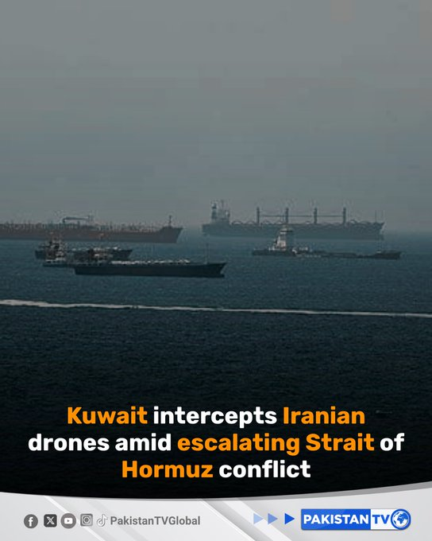

@PakTVGlobal
📝 原文: Kuwait says its air defences intercepted hostile drones after renewed Iranian aerial attacks, as tensions between Iran and the United States escalate over control of the strategic Strait of Hormuz. Explosions were reported near Kuwait.#Kuwait#Iran#StraitOfHormuz
🇨🇳 译文: 科威特表示，伊朗再次发动空袭后，科威特防空系统拦截了敌方无人机，伊朗和美国之间因控制战略性霍尔木兹海峡的紧张局势升级。据报道科威特附近发生爆炸。#Kuwait#Iran#StraitOfHormuz


🕒 2026-07-16T12:12:56+00:00